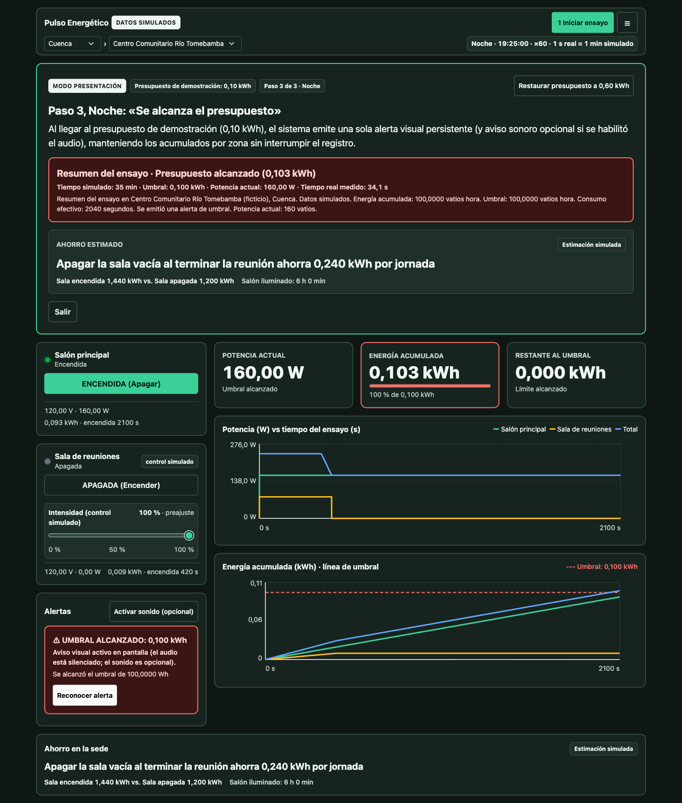
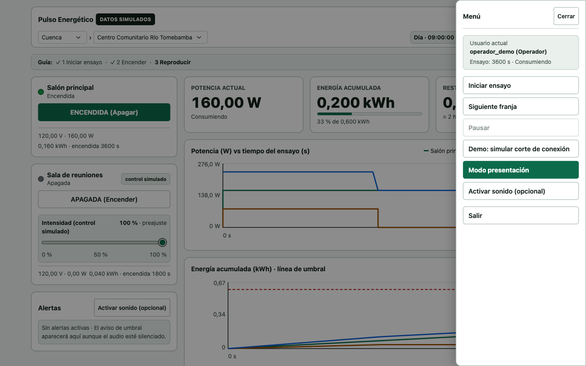
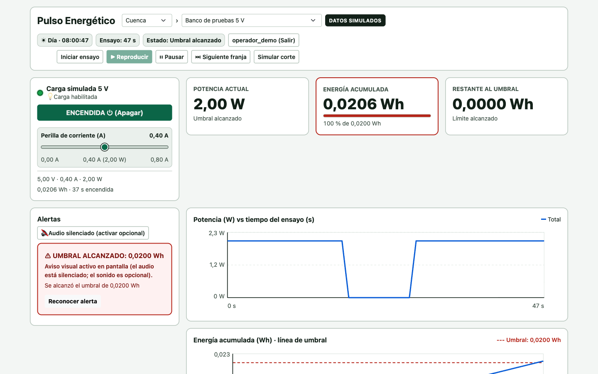
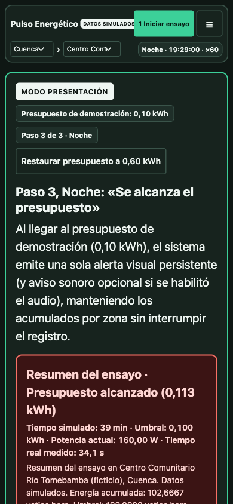

Una app web que le dice al encargado de un recinto comunitario qué está encendido, cuánta energía lleva consumida y cuánto le falta para su límite. La demo local está lista, probada y auditada. Faltan tres tareas antes de presentar.
| Fecha | 27 de noviembre de 2026 |
| Repositorio | github.com/datmetalpls/PulsoEnergetico (público) |
| Versión revisada | commit 1f1dbd8 en main |
| ODS | ODS 7 (principal). ODS 13 como hipótesis por validar |
| Equipo de agentes | Claude (líder e integrador), Codex, Antigravity (Hydrogen y Neon) y OpenCode con DeepSeek |
El recorrido obligatorio funciona de punta a punta en la máquina local con Docker. Pasa las pruebas automáticas, la prueba de aceptación del jurado y una revisión en navegador. Cuatro auditorías no encontraron fallos críticos, y los hallazgos altos ya están corregidos. Para presentar faltan tres tareas: probar sin Wi-Fi, grabar el video de respaldo y ensayar los 90 s.
| Función | Detalle |
|---|---|
| Dos localidades | Cuenca (Ecuador) y Puente Alto (Chile). Cada una tiene un banco de pruebas de 5 V y una sede comunitaria ficticia. Cada recinto guarda su propio ensayo, independiente de los demás. |
| Control por zona | Salón principal (160 W) y sala de reuniones (80 W, regulable de 0 a 100 %). En el banco, la carga de 5 V tiene una perilla de 0 a 0,80 A; a 0,40 A da 2 W. |
| Tres cifras | Potencia actual (W), energía acumulada (Wh o kWh) y lo que falta para el límite, con el tiempo estimado. Sin consumo, muestra «Consumo detenido». |
| Dos gráficos | Potencia en el tiempo, y energía acumulada con la línea del umbral. Al apagar, la curva queda plana. |
| Alerta única | Banda roja persistente, visible aunque el audio esté silenciado, con pitido opcional de 0,8 s. Hay una sola alerta por ensayo. La carga no se apaga sola. |
| Día, tarde y noche | Reloj del escenario con «Siguiente franja», que no suma ni borra energía. La sede avanza a ×60 (1 s real = 1 min simulado); el banco, en tiempo real. |
| Ahorro | Tarjeta: «Apagar la sala vacía al terminar la reunión ahorra 0,240 kWh por jornada» (estimación simulada). |
| Modo presentación | Recorre Día → Tarde → Noche con textos grandes y un botón «Siguiente paso». Usa un presupuesto de demostración de 0,10 kWh. |
| Estado persistente | Refrescar, abrir otra pestaña o reiniciar Docker muestra el mismo ensayo. |
| Permisos | Operadores por localidad, un operador de demo para ambas y un observador de solo lectura. El servidor valida cada acción. |
Las lecturas repetidas no suman dos veces. Las que llegan fuera de orden se guardan, pero no se integran. Un corte de conexión queda marcado «sin datos», sin consumo inventado. El tiempo del ensayo, que sí cuenta para los Wh, se lleva separado de la hora del escenario, que solo narra el día.
Django 5.2 sirve la interfaz Angular 19 + Bootstrap y la API /api/ desde el mismo origen. PostgreSQL 17 corre en una red interna de Docker Compose, sin puerto publicado. docker compose up aplica migraciones y carga los escenarios sin duplicar.
docker compose up --build -d. Después: docker compose up -d (funciona sin Internet). No usar docker compose down -v, porque borra los datos.http://localhost:8080 y pulsar «Entrar como operador demo».| Usuario | Contraseña (solo demo local) | Puede |
|---|---|---|
operador_demo | Demo-2026 | Operar Cuenca y Puente Alto |
operador_cuenca | Cuenca-demo-2026 | Operar Cuenca |
operador_puente | Puente-demo-2026 | Operar Puente Alto |
observador | Observador-demo-2026 | Solo mirar |
Todas estas pruebas las ejecutó el integrador sobre el commit indicado. No son solo lo que informaron los agentes.
| Prueba | Resultado |
|---|---|
| 5 V × 0,40 A | 2,00 W |
| 18 s de consumo | 0,0100 Wh |
| 10 s apagado | se mantiene en 0,0100 Wh |
| 36 s de consumo efectivo | 0,0200 Wh y una sola alerta |
| Siguiente franja | conserva Wh y tiempo del ensayo |
| Reenviar el mismo lote de lecturas | no duplica Wh ni la alerta |
| Refrescar o abrir una segunda pestaña | mismo ensayo y mismo acumulado |
| Apagar la sala en Cuenca | la sala marca 0 W y conserva su energía; el total baja de 240 W a 160 W; Puente Alto no cambia |
| Prueba inversa en Puente Alto | igual, y Cuenca no cambia |
| Permisos | el observador y el operador de la otra localidad reciben 403 |
| Navegador a 1440 y 390 px | sin desborde y 0 errores de consola |
| Segundo arranque sin descargas | conserva los datos (con --no-build --pull never) |
Comando para repetirla: python3 -I scripts/acceptance.py .env.example contracts/telemetry.example.json. Debe dar 19/19 PASS.
| Auditoría (agente) | Crítica | Alta | Media | Baja | Nota |
|---|---|---|---|---|---|
| Seguridad (Codex) | 0 | 2 | 4 | 3 | 1 |
| Legibilidad (Antigravity) | 0 | 1 | 5 | 5 | 1 |
| Arquitectura (Claude) | 0 | 2 | 4 | 4 | 3 |
| QA (OpenCode + DeepSeek) | 0 | 0 | 4 | 5 | 7 |
Corregido:
sqlparse actualizado.Además se aplicó la revisión de Alex: tarjeta de ahorro, dos columnas, modo presentación, escala ×60 visible, guía 1-2-3, entrada rápida y menú ☰. Los informes completos están en audits/.
| # | Tarea | Por qué | Responsable |
|---|---|---|---|
| 1 | Arrancar con el Wi-Fi apagado (docker compose up -d, sin --build) y hacer el recorrido | La sala puede no tener Internet | Por asignar |
| 2 | Grabar el video de respaldo del modo presentación y guardarlo fuera del laboratorio | Último recurso si todo falla | Por asignar |
| 3 | Ensayar los 90 s con cronómetro (docs/08-guion-90s.md) | El modo presentación tarda ~35 s | Por asignar |
| 4 | (Opcional) Ejecutar scripts/deploy-ec2.sh en el Learner Lab; nunca usar Reset | Respaldo y evidencia en la nube | Por asignar |



